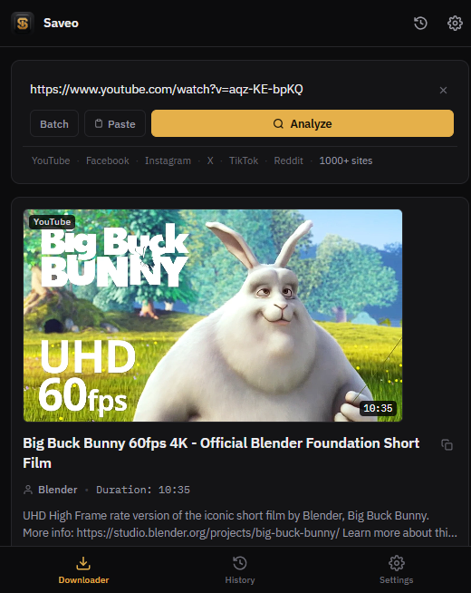
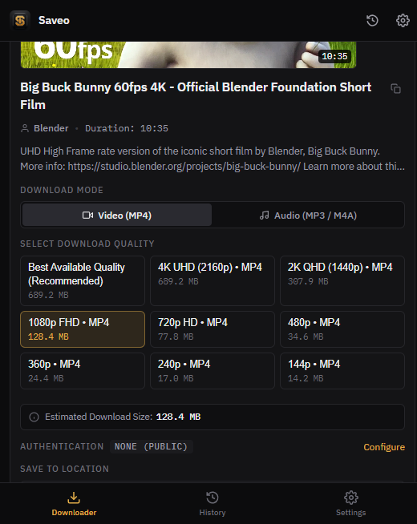

Full quality, every format
Grab up to 4K video, or extract audio as MP3 up to 320 kbps, M4A, or WAV wherever the source allows.
A local-first video, audio, and social media downloader for Windows, with an experimental Android build. Paste a link, pick a quality, and keep the file — all on your machine.
Free and open source (MIT). Windows 10 and 11 stable; Android is an experimental build. No account required.

Grab up to 4K video, or extract audio as MP3 up to 320 kbps, M4A, or WAV wherever the source allows.
Paste a playlist or album link, filter long lists, shift-click a range, reverse the order, and keep the items together in a folder named after the collection.
Watch speed, downloaded size, and an updated ETA for every running download, plus the local engine status.
Drop in many links at once, one per line or comma separated, and track the whole queue together.
Revisit past downloads, play finished files, or open their folder — history never leaves your computer.
Import a browser session or a cookies.txt file to get past “sign in to confirm you're not a bot” checks.
Save subtitle tracks next to the video or embed them, plus title/author metadata and cover art when FFmpeg is available.
Pick the precise source stream — codec, frame rate, HDR, bitrate, and container — with video-only streams paired to the best audio.
Let the queue wait for your chosen local-time window, while anything already downloading keeps going.
Save a channel or playlist and let Saveo check it for new items — only new links are queued.
Pick a chapter from a long video and download just that segment as its own named file.
Turn downloaded audio into a token-protected RSS feed or M3U playlist for your podcast app.
Each finished file gets a SHA-256 receipt you can verify later, plus a library manifest export.
Find a phrase in downloaded subtitle tracks and queue just that moment as a clip.
Saveo Beam is an opt-in local page for sending a link from a phone on the same Wi-Fi to this PC.

See every available resolution with its estimated size before you start, switch to audio-only when that is all you need, and the app writes the file where you told it to.
Long titles are cleaned up instead of breaking the file name, and existing files are not silently overwritten.
Screenshots taken from the app at a narrow window size — Saveo adapts to the space it has.
Videos, shorts, reels, playlists, and audio from the sites you already use, plus a thousand more through the bundled yt-dlp engine.
No account. No analytics. No third-party proxy. Downloads run on your device, in your own network.
Yes. It is open source under the MIT license, with no paid tier and no account.
Windows 10 and 11 are the stable target. An Android edition is available as an experimental build.
No. Saveo is a desktop application — this page is just the project page. Downloads need the local engine, so install the app to use it.
Into the download folder you choose in the app. Nothing is uploaded anywhere.
Only download content you have the rights to. Saveo is a tool; following each site's terms and your local law is up to you.